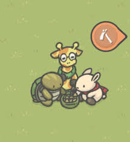

¿Qué aprenderás en este espacio de nuestra emisora?
¡Lo más sonado ahorita en el mundo!
Sumérgete en las tendencias globales con nuestra selección de lo más sonado en la actualidad. Desde los ritmos pegajosos del pop y los éxitos vibrantes del K-pop, hasta las melodías cautivadoras del J-pop y la energía inigualable del rock, nuestra programación te conecta con los géneros musicales más populares y escuchados alrededor del mundo. ¡No te pierdas los hits que están marcando la pauta!
¿Hay disputa legal en el pop de nuevo?
Recientemente, hemos visto varios casos que destacan, como la demanda de varios artistas de la compañía SM Entertainment buscando rescindir sus contratos, alegando términos injustos y falta de transparencia en sus ganancias. Además, otros artistas han denunciado la explotación y las condiciones laborales abusivas en sus agencias, lo que ha puesto de relieve la necesidad de una reforma en la industria. Estos conflictos subrayan las luchas por derechos más justos y equitativos dentro del vibrante pero exigente mundo del K-pop.
¡Hit videos en tendencias!
"Anti-Hero"- Taylor Swift: Un tema introspectivo y pegajoso de su álbum "Midnights".
"As It Was" - Harry Styles: Manteniéndose popular con su sonido retro y vibrante. "Love Wins All" - IU: Un éxito conmovedor que ha alcanzado más de 37 millones de vistas. "Lost" - Linkin Park: Un lanzamiento póstumo que ha capturado la atención de los fans del rock."Lux Æterna"
EXO-CBX denuncia prácticas injustas de SM Entertainment durante una conferencia de prensa!
Así como leíste. La subunidad ChenBaekXi anunció que tomarían acciones legales contra SM Entertainment por trato injusto.
¿Y quién es ese poco de gente?. Para que no te perdás más, te explicamos.
En esta esquina, con 29 años en la industria, y siendo una de las BIG3 del Kpop: SM Entertainment. Empresa surcoreana que tiene a grupos de kpop exitosos como Super Junior, Girl's Generation y EXO.
En esta otra esquina, con 8 años como subunidad exclusiva: Chen, Baekhyun y Xiumin, quienes también son miembros del grupo surcoreano EXO
Se sabe que tras negociaciones el año pasado, se anunció que 4 de los miembros de EXO no renovarán con la empresa para promociones individuales, entre ellos CBX. ¿El problema? En la noche del 9 de junio cuando esta subunidad (quienes están bajo el sello de IBN100, creada por Baekhyun) anuncia que harán una conferencia de prensa de emergencia por trato injusto por parte de SM.
Indicaron que SM estaba incurriendo en prácticas desleales al exigir el 10% de los ingresos de los artistas generados por actividades individuales (álbumes, conciertos y anuncios). En su momento IBN100 accedió en ceder el 5.5% pero indican que SM lleva ignorando por más de 2 meses los términos negociados que fueron la premisa del acuerdo.
Acotaron también que SM años antes, orilló a los miembros a renovar por primera vez aún estando algunos de ellos en su servicio militar obligatorio. Caso de Baekhyun quien mencionó que si renovó en su momento; fue únicamente porque si firmaba les aseguraban mejor y mayor pago a los demás miembros.
De igual forma, CBX asegura que no han recibido pago por las últimas actividades que tuvo EXO como grupo. Recordemos que su último lanzamiento "EXIST" acumuló un total de 1,074,914 copias solo en su primer día de ventas, te dejamos hacer las matemáticas para el resto.
Por su lado SM indica que tomarán acciones legales y que no tolerarán que no validen el contrato y el acuerdo que tenían.
Ahora bien, EXO y CBX no son los primeros en la industria en no renovar y aunque los miembros han hecho hincapié en que el grupo se mantendrá por bastante tiempo, su fandom Exo-L no puede evitar dividir sus opiniones respecto a esta polémica.
Ya para terminar te dejamos un fragmento de la declaración final de CBX el año pasado: "Más que nada, valoramos a nuestros miembros de EXO... Nunca traicionaríamos a estos miembros y daremos prioridad a EXO en cualquier situación"
¿Qué crees vos que podría pasar?
¿¿Sos Team Chi o Team Moca? ?

¿Sos amigo de la Jirafa que parece ser cómplice del robo de tus muebles, o sos inseparable de la tortuga que cuida su Bonsai?
El jueguito móvil del momento en el que seguís la vida de Tsuki, un conejito adulto que tras sus aventuras en la gran ciudad regresa a Villa hongo para vivir la vida con un poco de menos revoluciones.
Desarrollado por RapBot Studios para iOS y HyperBeard para Android, y con no muchas cosas a simple vista para entretenerte, te aseguramos que no te va a decepcionar.
Si no sabes de qué va el asunto, fácil: ¡Tsuki Odyssey!
Pero bueno, lo instalé. ¿Ahora qué? Fácil, después de ver con pesar como desvalijan la casa del árbol del pobre conejo y ver que no tiene más que una silla y una mesa de madera regaladas; vas a sembrar zanahorias, cosecharlas y pescar para vender peces en la tienda de Yori y en el tablero del ayuntamiento. Puedes conseguir muebles, decoraciones, juguetes para Tsuki, y ¿por qué no? Plantas, pisos y papeles tapices a medida que jugás.
Odyssey no premisa algo más que un juego de aventura pasivo; decorar la casita al conejo. Pero justo ahí tenés el secreto de su enganche; te permite jugar libremente, a tu propio ritmo. Decorar a tu gusto e incluso ver publicidad para conseguir zanahorias extras, siempre que querás.
Y vos, ¿estás listo para darle un chance a Tsuki y conocer a todos los personajes de la Villa Hongo? Figuras como Vegetta777 ya lo están jugando. ¿Qué esperas?
Como todo juego tiene su opción de pago; muebles infinitos y de una selección exclusiva, ¡hasta un tercer piso!. Que aunque claramente es un plus, perfectamente podes jugarlo sin él. Decora tu espacio, haces pequeñas misiones, descubrís un poco los secretos de ese sospechoso y conveniente robo y luego tras conseguir cierto grado de confianza con otros personajes por medio de la interacción, podés redecorar (o desvalijar) casas y el mismo muelle.